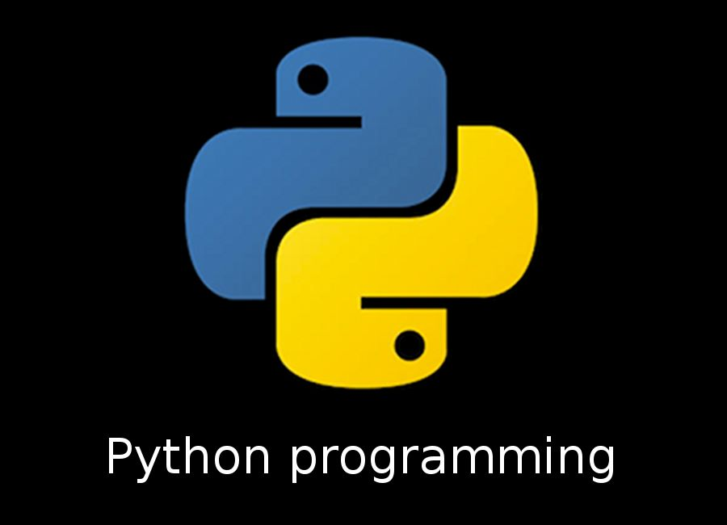

PYTHON PROGRAMMING

Python is a high-level, interpreted programming language that was created by Guido van Rossum and first released in 1991
Python programming language is a Free and Open Source .
Features of Python
*Python is an interpreted language
* Python is Dynamically Typed
* Python is Strongly Typed
* Write less code and do more
*Python is Object-Oriented
*Free and Open Source
How does Python work?
When you read about Python, quite often you come across words like — compiled vs interpreted, bytecode vs machine code, dynamic typing vs static typing, garbage collectors, etc.
Python is an interpreted, high-level, general-purpose programming language.
It is is dynamically typed and garbage-collected.